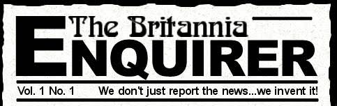

The Britannia Enquirer came about when I found I needed an added venue to take on the various issues that might not be suitable or timely for ImaNewbie. So I decided to introduce a new tabloid newspaper designed to keep my readers informed of the ongoing controversies plaguing our land and give me a chance to take a few shots at OSI/EA. The format is different than the regular toons with each cartoon limited to one frame, a headline, and if I am really feeling strongly about an issue, maybe even a full blown rant.
- Vol. 1 No. 1 OSI Announces Improved Monster Intelligence
- Vol. 1 No. 2 OSI Addresses Housing Crisis
- Vol. 1 No. 3 OSI Denies Weapons Overpowered
- Vol. 1 No. 4 Spawn Camping in Trammel
- Vol. 1 No. 5 The Protest on Atlantic
- Vol. 1 No. 6 More Housing Delays
- Vol. 1 No. 7 The Duping Issue
- Vol. 1 No. 8 You Guessed It ... Housing
- Vol. 1 No. 9 P-s-s-s-t! Wanna buy something really RARE?
- Vol. 1 No. 10 There's a Place For Us
- Vol. 1 No. 11 A Conspiracy Theory
- Vol. 1 No. 12 Dragon Gridlock
- Vol. 1 No. 13 Scenes We'd Like to See
- Vol. 1 No. 14 Multi-Speak Crack Down
- Vol. 2 No. 1 An End to the Housing Crisis!
- Vol. 2 No. 2 What's Wrong With This Picture?
- Vol. 2 No. 3 We Really Appreciate Your Opinion, Honest!
- Vol. 2 No. 4 In-Game Support